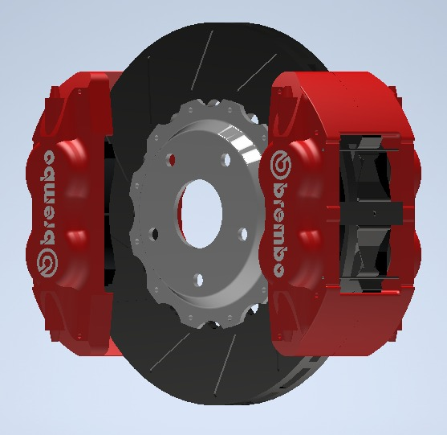

Freno de disco de emergencia: seguridad extrema cuando más la necesitas
Comprar ahoraNuestro freno de disco de emergencia está diseñado para ofrecer una respuesta rápida al momento de el frenado, Siedo asi potente y seguro en situaciones críticas,como cuando los frenos tienen algun fallo asi mismo brinda seguridad a los pasajeros como a los vehiculos ,Ideal para conductores que buscan mayor protección, durabilidad y control.

Diseñado para reaccionar rápidamente ante frenadas de emergencia.
Materiales duraderos para soportar calor, presión y uso intenso.
Mayor control del vehículo en momentos críticos.
$2,499 MXN
Disponible por tiempo limitado en Cloe Auto Partes.
Solicitar información📍 Toluca, Estado de México
📞 Teléfono: (722) 555-1234
✉️ ventas@cloeautopartes.com
Horario de atención:
Lunes a Viernes: 9:00 AM - 6:00 PM
Sábados: 9:00 AM - 2:00 PM